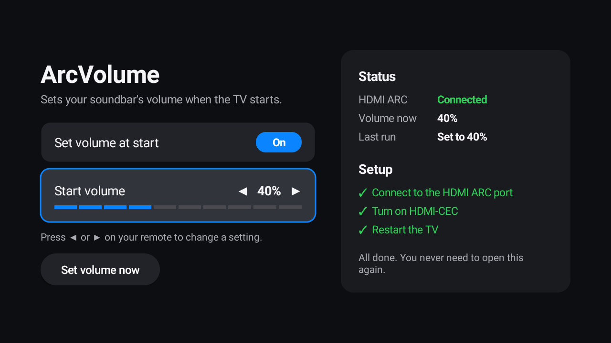

Full volume.
Every time.
Soundbar too quiet on HDMI ARC? Many soundbars and home theatres forget their volume when the power goes off. ArcVolume sets yours back each time your Android TV starts.
Download for Android TV
Low volume over HDMI ARC?
The TV shows full volume, but the sound is still low. Many HDMI ARC soundbars and home theatres go back to a lower level after a power cut or a main-switch restart, and raising the TV's volume can't fix it. ArcVolume raises the soundbar itself, using HDMI-CEC.
It just turns it back up.
There's nothing to run or remember once it's set up.
Waits for the soundbar
At startup it waits for the HDMI ARC connection and reads the soundbar's real level.
Sets your level
Full volume by default, or any level from 10% to 100%. You can also turn it off.
Keeps to itself
It has no internet permission, so it can't send anything anywhere. No root needed.
Set it up once.
Menu names differ a little between TV brands.
Connect the soundbar
Use the HDMI port on your TV labelled ARC or eARC.
Turn on HDMI-CEC
On the TV and the soundbar. Some brands call it Anynet+, Bravia Sync or SimpLink. Your TV remote should now change the soundbar's volume.
Allow the app to install
On the TV, open Settings, then Device Preferences, then Security & restrictions. Under Unknown sources, allow your file manager.
Copy the app to a USB drive
Download ArcVolume.apk on a computer, copy it to a USB drive, and plug the drive into your TV.
Install it
Open the USB drive in your TV's file manager, select ArcVolume.apk and choose Install.
Open ArcVolume once
Find it in your apps and open it. It's already on and set to 100%. Android won't start a new app by itself until it has been opened, so this one time is needed.
Restart your TV
The volume should rise by itself soon after the picture appears.
Prefer a computer? Install with adb
Turn on USB debugging in the TV's Developer options, then run these. Use your TV's IP address.
adb connect YOUR_TV_IP:5555
adb install ArcVolume.apkThen open ArcVolume once on the TV.
Questions.
Will it be very loud?
It starts at 100% until you change it. To pick a lower level, open ArcVolume and use the left and right buttons on your remote on Start volume. The soundbar moves to that level and plays a short sound, so you can hear it.
Can I turn it off?
Yes. Open ArcVolume and switch Set volume at start to Off. Your soundbar's volume will then be left alone.
Do I need to open it every time?
No. Open it once after installing. After that it runs by itself at every TV start.
Does it work with my TV and soundbar?
It's been tested on a Xiaomi Mi TV with Android 9 and a boAt Aavante HA0304 soundbar. Other Android TVs with working HDMI-CEC volume control should work, but they haven't been tested. If yours doesn't, please report it.
The volume didn't rise. What should I check?
Open ArcVolume. It shows whether HDMI ARC is connected and what happened on the last run. Make sure the TV remote can change the soundbar's volume, because the app uses that same path.
How long does it take?
On the tested TV it starts about 22 seconds after boot and finishes within about 15 seconds. You may hear the lower volume briefly because Android has to load first.
Why does my TV warn me when installing?
Android checks apps that come from outside the Play Store. If your TV asks, choose to install anyway. If you block it, the app will not install.
Does it work when the TV wakes from sleep?
It runs when the TV fully starts. Waking from sleep may not trigger it.
How do I remove it?
Uninstall it from your TV's Apps settings like any other app.